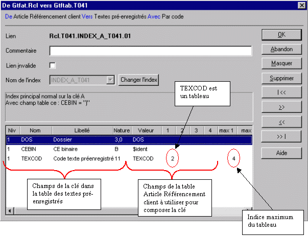

Les paramètres d’un lien sont :
|
Commentaire |
Commentaire libre associé au lien. |
|
Lien invalide |
Si cette case est cochée ce lien n’est pas visible par les outils utilisant le dictionnaire. Quand un lien est créé, il est toujours créé invalide, en couleur rouge dans l’arbre et le schéma. Vérifiez le lien et décochez la case. |
|
Invalider ce lien dans le répertoire d’origine |
Cette case à cocher n’est présente que si le dictionnaire est surchargé. Voir Surcharge des liens . Cela vous permet d’invalider un lien sans modifier le dictionnaire d’origine. |
|
Nom de l’index |
Index utilisé dans la table destianation du lien. |
|
Nom Odbc pour la table destination |
Voir Odbc : Liens |
|
Fonction Diva associée pour Odbc |
|
|
Remplissage
|
Chaque ligne du tableau représente un champ de l’index de la table destination du lien, et la valeur à placer dans ce champ. La valeur peut être un champ de la table d’origine du lien ou une constante. 
|
|
Niveau Nom Libellé |
Les colonnes Niv Nom Libellé et Nature donnent les informations concernant le champ de l’index à remplir.
|
|
Valeur |
Valeur à mettre dans le champ de l’index. Valeur peut être un champ de la table, une constante, $ident. $ident indique que la valeur à mettre dans le champ de l’index est le code identifiant de la table destination du lien. Dans l’exemple ci-dessus, le champ CEBIN est l’identifiant de la table et doit valoir ")".
|
|
1 2 3 4 |
Indices si Valeur est un champ indicé (un tableau). |
|
Max 1 2 3 4 |
Information donnant les valeurs maximales que peuvent prendre les indices. |
Voir également :